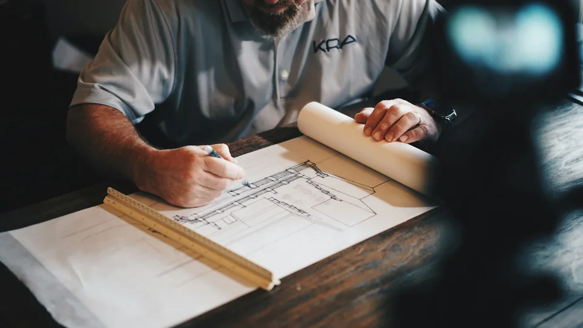
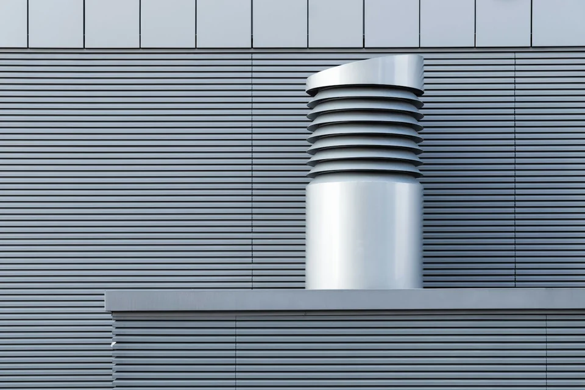
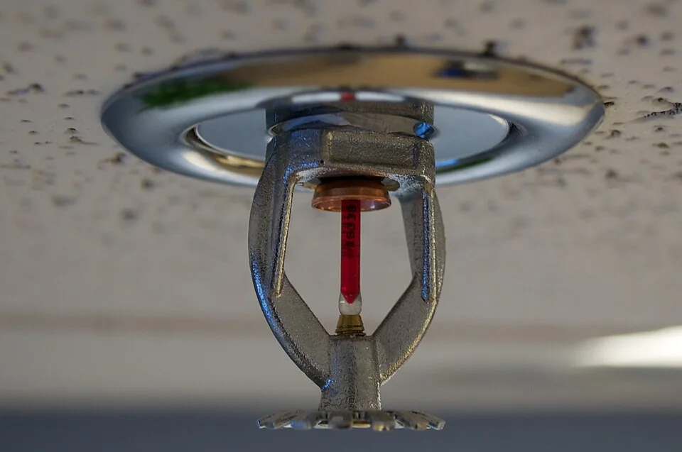
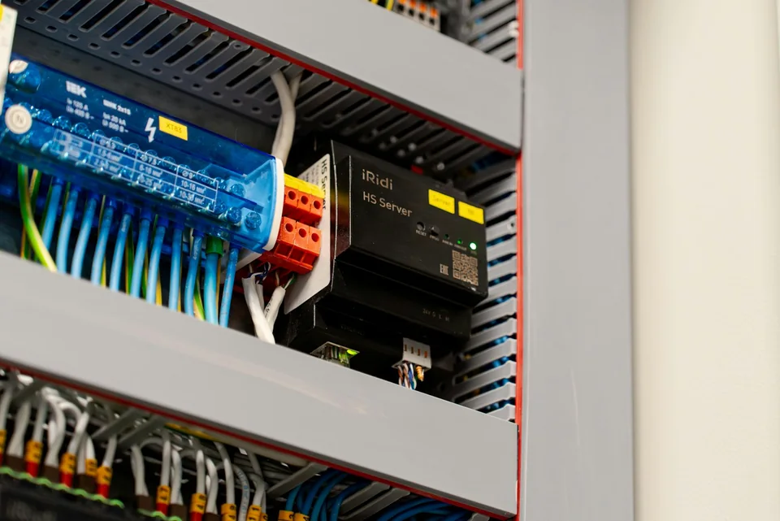
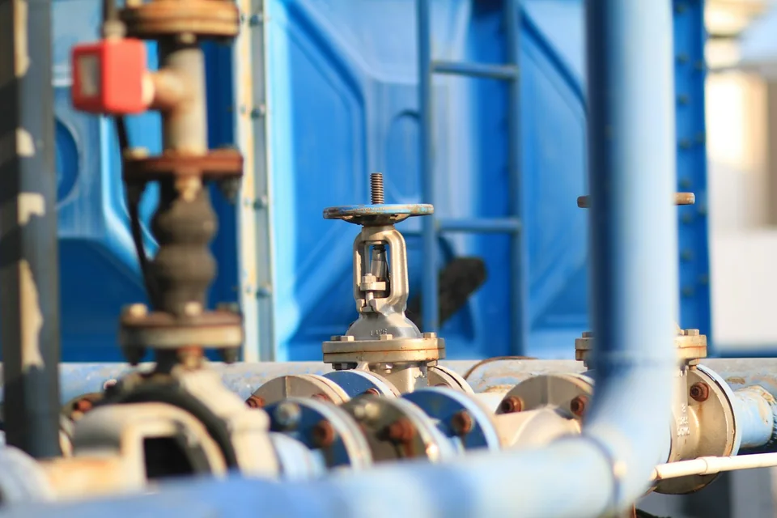
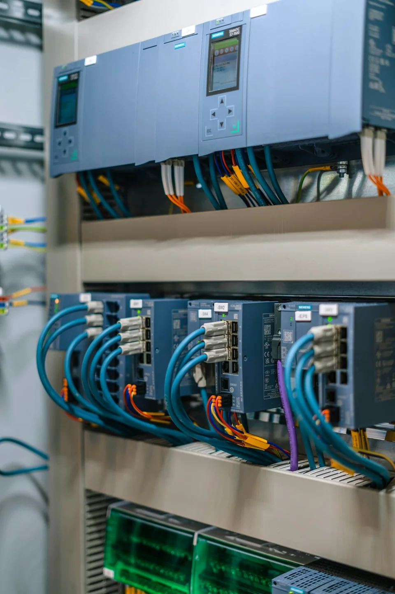
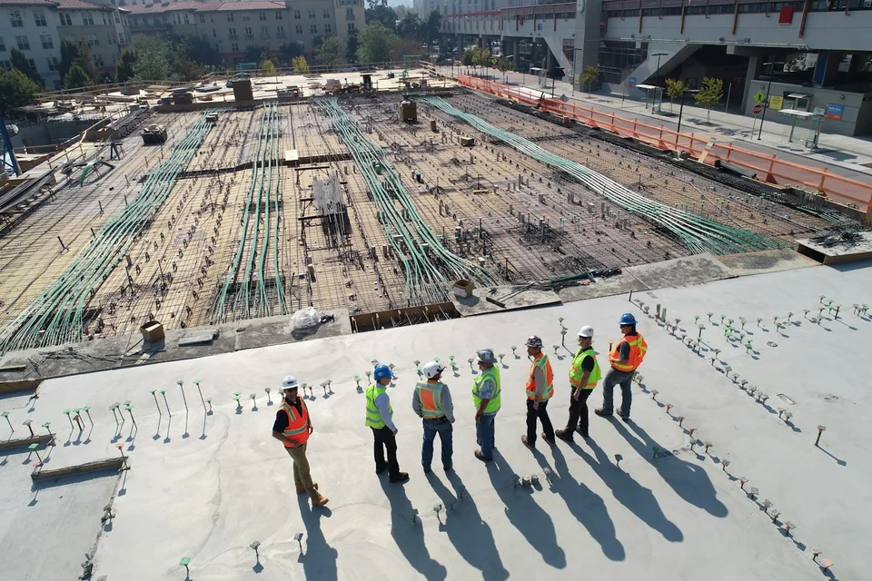
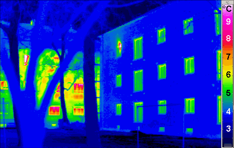

BIM და ტექნიკური ნახაზებიBIM and technical drawings
3D მოდელები, ტექნიკური ნახაზები და სისტემების განლაგების თავსებადობის შემოწმება.3D models, technical drawings and checks for conflicts between systems.
KAZMA MEP საინჟინრო სერვისებიEngineering services
სისტემის დაგეგმვა, მონტაჟი ან არსებული პროექტის ტექნიკური მხარდაჭერა.System planning, installation or technical support for an existing project.
რას მოიცავსScope of service

რას მოიცავსScope of service

რას მოიცავსScope of service

რას მოიცავსScope of service

რას მოიცავსScope of service


3D მოდელები, ტექნიკური ნახაზები და სისტემების განლაგების თავსებადობის შემოწმება.3D models, technical drawings and checks for conflicts between systems.

სამუშაოების ორგანიზება, კოორდინაცია და ობიექტზე ტექნიკური მხარდაჭერა.Work organization, coordination and on-site technical support.

ენერგიის მოხმარების შეფასება და გაუმჯობესების რეკომენდაციები.Energy-use assessment and recommendations for improvement.
მომდევნო ნაბიჯიNext step
ფოტოები სერვისების საილუსტრაციოდ გამოიყენება. ზომა და ფორმატი ადაპტირებულია; კადრი ეკრანის ზომას ერგება. სპრინკლერისა და თერმოგრამის ვერსიებზე მოქმედებს შესაბამისი CC BY-SA ლიცენზია.Stock photographs illustrate the services. Images are resized, converted and responsively cropped. The sprinkler and thermogram versions retain their respective CC BY-SA licenses.